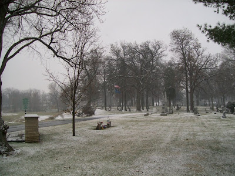We may be getting our first real snow of the season. A lot of students will be on the road and it will not be a good day to travel.
Update: I was traveling today, and apparently the snow in Rensselaer stopped in the morning. The driving was difficult not because of snow, but because of dense fog, especially 50 miles south and west of Rensselaer.
2008 started with bad weather. Here are a couple pictures from the 2nd or 3rd of January, 2008 on Interstate 65 between the two Rensselaer exits.
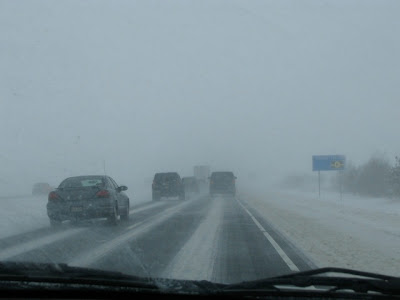This is what we have to look forward to in the next four months.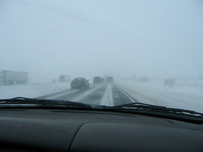

This blog reports events and interesting tidbits from Rensselaer, Indiana and the surrounding area.
Sunday, November 30, 2008
Saturday, November 29, 2008
Googling blogs
Bored this evening, I did a google search for blogs containing Rensselaer, Indiana. I found three recent entries that were interesting or intriguing.
The first was from someone visiting Rensselaer who seemed to be doing some geocaching:
http://shutterbuginfl.vox.com/library/posts/2008/11/
The second has a picture of the mayor and nice comments about Rensseler:
http://ellewaymarker.blogspot.com/2008/11/rensselaer-indiana.html
The third is the blog from the White House on Park Avenue. It has not been active lately. Fred and Sally must be busy.
http://whitehouseonpark.com/blog/
(I have come upon the waymarking.com site a number of times recently. I do not think this is geocaching, but it is similar. Search using the zip 47978 and see what comes up.
I guess the official geocaching site is www.geocaching.com. You can enter the zip code there and see what people are doing around Rensselaer with geocaching.)
The first was from someone visiting Rensselaer who seemed to be doing some geocaching:
http://shutterbuginfl.vox.com/library/posts/2008/11/
The second has a picture of the mayor and nice comments about Rensseler:
http://ellewaymarker.blogspot.com/2008/11/rensselaer-indiana.html
The third is the blog from the White House on Park Avenue. It has not been active lately. Fred and Sally must be busy.
http://whitehouseonpark.com/blog/
(I have come upon the waymarking.com site a number of times recently. I do not think this is geocaching, but it is similar. Search using the zip 47978 and see what comes up.
I guess the official geocaching site is www.geocaching.com. You can enter the zip code there and see what people are doing around Rensselaer with geocaching.)
Melville Street
For many months there has been construction on Melville Street on the east side of Rensselaer. The city is putting in a new storm sewer line. Rensselaer has a combined sewer system in which the storm water enters the regular sewer system. The result is that when we get really heavy rains, sewers back up in basements. It has happened to me multiple times, and it is one of Rensselaer's bad features.
The construction has been slowly moving north and presently stops at the railroad tracks. Today I decided to take some pictures. The first one is from the train tracks looking south. Columbia Park is on the right.
Near the tracks the roadbed is crushed limestone. In this section the new storm sewers are installed and covered and new street drains have been installed.
We are now south of Columbia Park and have met a strange machine. I am not sure what it does. On the sides of the street you can see that the curbs have been poured and are curing under tarps. The road is still composed of crushed limestone.
There is more equipment a block further south. Along the sides of the road, the curbs and the new sidewalk are exposed. The first layer of asphalt has been put on the street, covering the crushed limestone base.
Outside of Van Rensselaer school there is a trio of machines. If you look at the lower right you will see that the workers have been busy installing the second layer of asphalt. The street is almost at the level of the curbs.
Crossing highway 114 we find the finished product. In July and August the street here was dug out about a foot below where it is now.
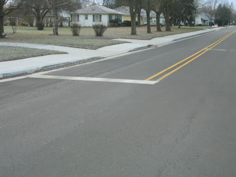At the river we finally see the pipe that is the point of all the road destruction and reconstruction. Future major rains will send a torrent of water rushing into the river through this pipe. And since the regular sewer system will not be overloaded, maybe my basement will stay dry.
With the combined sewer system, heavy rains overwhelm the sewage treatment plant and as a result, water with raw sewage is released into the Iroquois River. It is this problem, and not so much the water in basements, that has been the stimulus for the Melville Street project. After all, we live in a flat area where the water table is not too far from the surface. As a result, basements are the exception in Rensselaer.
The construction has been slowly moving north and presently stops at the railroad tracks. Today I decided to take some pictures. The first one is from the train tracks looking south. Columbia Park is on the right.
Near the tracks the roadbed is crushed limestone. In this section the new storm sewers are installed and covered and new street drains have been installed.
We are now south of Columbia Park and have met a strange machine. I am not sure what it does. On the sides of the street you can see that the curbs have been poured and are curing under tarps. The road is still composed of crushed limestone.
There is more equipment a block further south. Along the sides of the road, the curbs and the new sidewalk are exposed. The first layer of asphalt has been put on the street, covering the crushed limestone base.
Outside of Van Rensselaer school there is a trio of machines. If you look at the lower right you will see that the workers have been busy installing the second layer of asphalt. The street is almost at the level of the curbs.
Crossing highway 114 we find the finished product. In July and August the street here was dug out about a foot below where it is now.
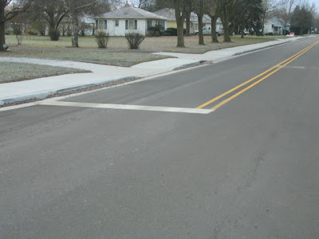At the river we finally see the pipe that is the point of all the road destruction and reconstruction. Future major rains will send a torrent of water rushing into the river through this pipe. And since the regular sewer system will not be overloaded, maybe my basement will stay dry.
With the combined sewer system, heavy rains overwhelm the sewage treatment plant and as a result, water with raw sewage is released into the Iroquois River. It is this problem, and not so much the water in basements, that has been the stimulus for the Melville Street project. After all, we live in a flat area where the water table is not too far from the surface. As a result, basements are the exception in Rensselaer.
Friday, November 28, 2008
Funerary sculpture (Mt Calvary)
Mount Calvary Cemetery is Rensselaer's Catholic cemetery. Much smaller than Weston Cemetery, it is located about a miles south of Renssleaer. None of the monuments here is as impressive as the big monuments at Weston. Clearly the early elite of Rensselaer was not Catholic.
Mount Calvary has three sculptures that are not specific to a family plot. This is in contrast to Weston, which as a municipal cemetery is more limited in what sorts of sculpture it can erect and, perhaps as a result, has not put up any.
The central statue is of the crucifixion, a standard Catholic theme that is often (almost always? always?) present in Catholic cemeteries.
To the east is a somewhat stylized relief of Mary.
To the west a similar portrait of Joseph provides symmetry.
I could find only one marker that had real sculpture on it, and it was small. It shows the sacred heart of Jesus, a popular bit of Catholic iconography.
There are other interesting contrasts between Mount Calvary and Weston cemeteries, and I hope to be able to post on them in the future.
Mount Calvary has three sculptures that are not specific to a family plot. This is in contrast to Weston, which as a municipal cemetery is more limited in what sorts of sculpture it can erect and, perhaps as a result, has not put up any.
The central statue is of the crucifixion, a standard Catholic theme that is often (almost always? always?) present in Catholic cemeteries.
To the east is a somewhat stylized relief of Mary.
To the west a similar portrait of Joseph provides symmetry.
I could find only one marker that had real sculpture on it, and it was small. It shows the sacred heart of Jesus, a popular bit of Catholic iconography.
There are other interesting contrasts between Mount Calvary and Weston cemeteries, and I hope to be able to post on them in the future.
Black Friday sale 2008
Ever since Wal-Mart arrived, Rensselaer has had real, albeit small, Black Friday Sales. Today I headed out to Wal-Mart fifteen minutes before 7:00. Along the way I noticed that there was a line at the Walgreens store. I think that they normally open at 9:00, but today they opened a bit before 7:00. I am not sure what the great deals were there, but they must have had something special.
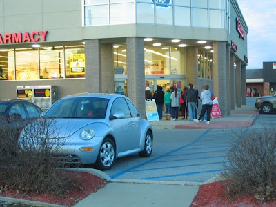By the time I got to Wal-mart, the doors had already been open for two hours. There were still lots of cars in the parking lot. There were also a couple of RVs over where people park overnight. I wonder if some people had camped out overnight to be first in line.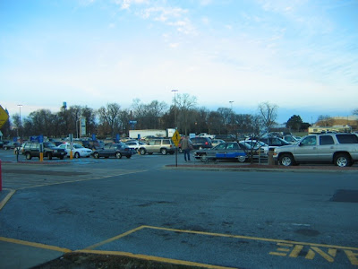The cash registers were ringing up sales. I think all the checkout lanes were open, and there were short lines at each.
I got into the line by the camera area because I wanted a couple things there. Terra, a colleague of mine, was in line ahead of me and told me that there had been lines when the store opened at 5:00. I guess she must have had a great time shopping because it was two hours later and she was ready to check out. The camera model that I was hoping to get was sold out even though there were about twenty boxes of them on the shelf. Terra told me that the way the system worked was that if you wanted a camera, you got a ticket for it and then did the rest of your shopping. When you checked out, you would pick up the camera. So maybe I should have gotten up a little earlier. Instead I paid $10 more for a similar camera from a different manufacturer that was also on sale. (But since it had not sold out, it probably was not as good a deal.)
The shopping cart of the lady ahead of me in line was pretty typical of what most of the shopping carts looked like. If the Rensselaer Wal-mart is typical of other Wal-marts, Wal-mart is having a good day.
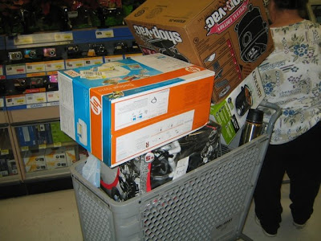Update: Give thanks that Rensselaer shoppers were not as enthusiastic as some shoppers in New York.
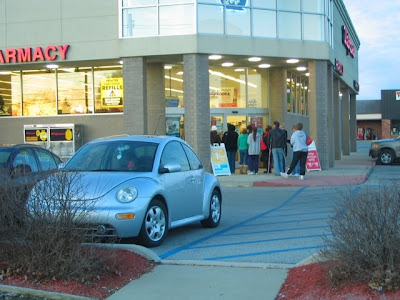By the time I got to Wal-mart, the doors had already been open for two hours. There were still lots of cars in the parking lot. There were also a couple of RVs over where people park overnight. I wonder if some people had camped out overnight to be first in line.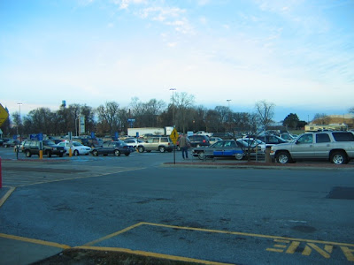The cash registers were ringing up sales. I think all the checkout lanes were open, and there were short lines at each.
I got into the line by the camera area because I wanted a couple things there. Terra, a colleague of mine, was in line ahead of me and told me that there had been lines when the store opened at 5:00. I guess she must have had a great time shopping because it was two hours later and she was ready to check out. The camera model that I was hoping to get was sold out even though there were about twenty boxes of them on the shelf. Terra told me that the way the system worked was that if you wanted a camera, you got a ticket for it and then did the rest of your shopping. When you checked out, you would pick up the camera. So maybe I should have gotten up a little earlier. Instead I paid $10 more for a similar camera from a different manufacturer that was also on sale. (But since it had not sold out, it probably was not as good a deal.)
The shopping cart of the lady ahead of me in line was pretty typical of what most of the shopping carts looked like. If the Rensselaer Wal-mart is typical of other Wal-marts, Wal-mart is having a good day.
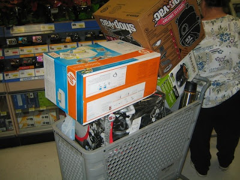Update: Give thanks that Rensselaer shoppers were not as enthusiastic as some shoppers in New York.
Thursday, November 27, 2008
Signs of Amtrak
This morning I noticed that there was a new sign up at the Rensselaer Amtrak station.
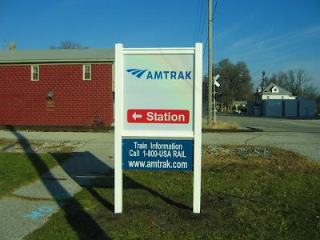Here is all that is left of the old Rensselaer depot. I know several people who think its demolition was a tragedy. I looked for a picture on-line, and the only one I could find is here.
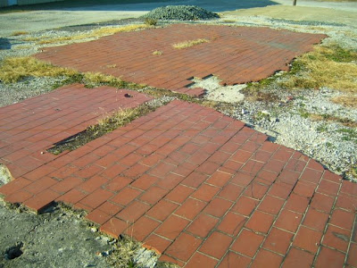The current Amtrak station is simple, both inside and outside.
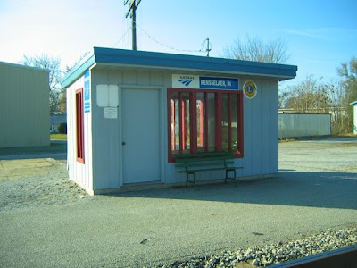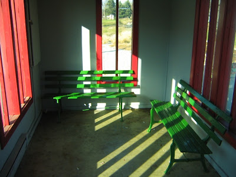Looking around a bit, I found the old signs, which confirmed that there really had been an upgrade of signs.
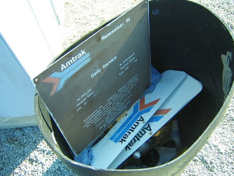On my list things to do around Rensselaer, taking a trip on Amtrak is number three. It is something that Rensselaerians should do at least once.
Update. I found this page with a lot of old pictures of Rensselaer and the Monon railroad. It even has a picture of the depot being demolished, and it turns out that I was living here at the time, though I have no memory of the depot building.
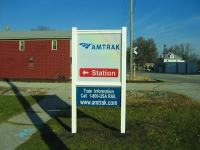Here is all that is left of the old Rensselaer depot. I know several people who think its demolition was a tragedy. I looked for a picture on-line, and the only one I could find is here.
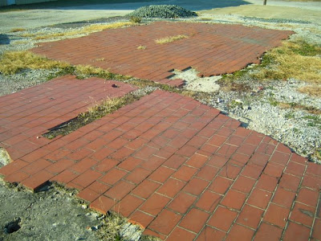The current Amtrak station is simple, both inside and outside.
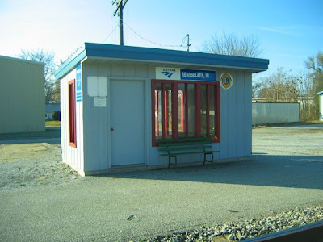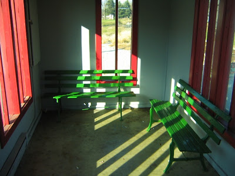Looking around a bit, I found the old signs, which confirmed that there really had been an upgrade of signs.
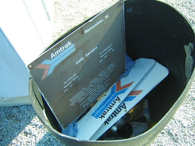On my list things to do around Rensselaer, taking a trip on Amtrak is number three. It is something that Rensselaerians should do at least once.
Update. I found this page with a lot of old pictures of Rensselaer and the Monon railroad. It even has a picture of the depot being demolished, and it turns out that I was living here at the time, though I have no memory of the depot building.
Wednesday, November 26, 2008
Funerary sculpture
Having looked civic sculpture and collegiate sculpture, I thought it would be fun to look at funerary sculpture, or the sculpture one can find in cemeteries (or graveyards, to use the more earthy word). Our first cemetery, Weston, is a little disappointing in terms of the amount of funerary sculpture, but there two very nice monuments.
The most impressive is in the old section of the cemetery, a woman on a column marking the grave of John Makeever and his two wives.
John Makeever was one of the leading citizens in early Rensselaer. He built a large hotel in Rensselaer, which no longer stands, and had his fingers in a variety of business dealings. So it is no surprise that his cemetery monument is one of the most impressive in Weston Cemetery.
In the background of the picture above and to the right of the Makeever column, you might be able to see a marker with a portrait on it. It is the marker for Israel Washburn who lived from 1838 until 1903. He was a medical doctor who practiced in Rensselaer from 1877 until 1903. His son, Ira Washburn, was also a doctor and my guess is that he built the large house that that is located just north of the Iroquois River along Grace Street. It was built around 1910 and after his death it was purchased by Saint Joseph's College and used for a few years as student housing, but is now again a private residence.
 A bit to the north of the Makeever column is a marker that looks like a tree. Being desperate for anything that looked like sculpture, I included it. There are at least two other tree-trunk markers in this cemetery. A bit of Internet research revealed that the tree trunk was a marker for children or people who died very young.
A bit to the north of the Makeever column is a marker that looks like a tree. Being desperate for anything that looked like sculpture, I included it. There are at least two other tree-trunk markers in this cemetery. A bit of Internet research revealed that the tree trunk was a marker for children or people who died very young.
West of the creek and along Bunkum Road is this small sculpture.
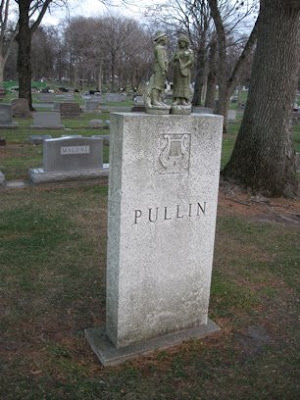Here is the close up. I do not know what meaning it has.
Finally, the sculpture that I like best other than the Makeever sculpture is this recent and delicate angel.
(Karen, you did a good job in selecting this monument for your mother.)
There are many more interesting things to explore in Weston Cemetery, but I think we will travel out to Mount Calvary Cemetery before we spend more time at Weston.
Meanwhile, if you want to explore cemeteries online, you might try www.findagrave.com
The most impressive is in the old section of the cemetery, a woman on a column marking the grave of John Makeever and his two wives.
John Makeever was one of the leading citizens in early Rensselaer. He built a large hotel in Rensselaer, which no longer stands, and had his fingers in a variety of business dealings. So it is no surprise that his cemetery monument is one of the most impressive in Weston Cemetery.
In the background of the picture above and to the right of the Makeever column, you might be able to see a marker with a portrait on it. It is the marker for Israel Washburn who lived from 1838 until 1903. He was a medical doctor who practiced in Rensselaer from 1877 until 1903. His son, Ira Washburn, was also a doctor and my guess is that he built the large house that that is located just north of the Iroquois River along Grace Street. It was built around 1910 and after his death it was purchased by Saint Joseph's College and used for a few years as student housing, but is now again a private residence.
A bit to the north of the Makeever column is a marker that looks like a tree. Being desperate for anything that looked like sculpture, I included it. There are at least two other tree-trunk markers in this cemetery. A bit of Internet research revealed that the tree trunk was a marker for children or people who died very young.West of the creek and along Bunkum Road is this small sculpture.
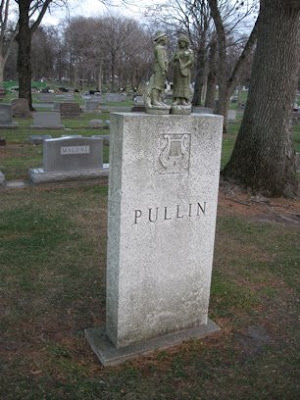Here is the close up. I do not know what meaning it has.
Finally, the sculpture that I like best other than the Makeever sculpture is this recent and delicate angel.
(Karen, you did a good job in selecting this monument for your mother.)
There are many more interesting things to explore in Weston Cemetery, but I think we will travel out to Mount Calvary Cemetery before we spend more time at Weston.
Meanwhile, if you want to explore cemeteries online, you might try www.findagrave.com
Collegiate Statues (part 3 of 3)
In two other posts (here and here) we visited sculpture in the grotto area of the Saint Joseph's College campus. Today we visit sculpture on the rest of the campus.
To the east of the chapel there is a large statue of Mary with an interesting history, partially told by two plaques on the base of the statue. The older one reads:
Alfred Hentschel worked for many years in the carpenter shop at SJC and later as director of buildings and grounds. During the Second World War he was a soldier in the German army and was captured by the Russians on the Eastern Front. I recall hearing that many or most of his fellow prisoners died, and he attributed his survival to the intercession of Mary. It was for this reason that he was concerned that the statue be displayed prominently.
In front of Seifert Hall is a stature of Fr. Augustine Seifert, the first president of the college. Seifert Hall was completed in 1939, and the statue was donated by the architect of the building, A.M. Strauss of Fort Wayne.
Sometime in the late 1980s or early 1990s the graduating seniors built a bonfire around the base of the statue and severely damaged it. The damage to the base can still be seen. If you look carefully, you may also see repair work in the neck area.
Located in front of the Chapel on the site of the old Administration Building is a marble statue of St. Joseph and the young Jesus that is named, "Saint Joseph the Educator." It was dedicated on April 15, 1991. (Contact, Summer 1991). According to a story in the Spring, 1990 issue of Contact, this statue was a project of the Parents Association. Daprato Rigali Studios did the design sketches but the actual sculptor was not named. The goal of the Parents Association was to raise $55000 to finance the project. (Contact is the alumni magazine of Saint Joseph's College.)
I do know know the story of the broken finger, but if I find out, I will update this description.
The plaque at the base of a modernist sculpture near the Core Building parking lot reads:
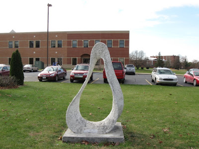The most recent addition to the statuary on campus is the striking presence of a nun. The notice in the Fall, 2008 issue of Contact, the college's alumni magazine, reported:
Sister Katherine Drexel established a school for Indian boys that lasted only a few years, but the building was key in the establishing the college on its present site. I like the statue, but I do not care for the littering of the area with the benches. Also, the new cement sidewalk replaces an older brick walkway that had a tremendous amount of character. Newer is not always better.
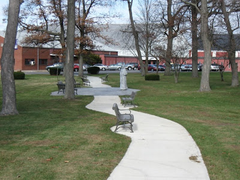
To the east of the chapel there is a large statue of Mary with an interesting history, partially told by two plaques on the base of the statue. The older one reads:
The statue of our Blessed Lady graced the niche in the north tower of the Administration Building from September 1894 until the building was destroyed by fire on the night of February 4, 1973. May she always be the mother of our house, concerned about all we do here.The newer one states:
Alfred Richard Hentschel September 1, 1916 - February 3, 1988 chose the site and constructed this shrine to Mary the Mother of our house May 1978.
Alfred Hentschel worked for many years in the carpenter shop at SJC and later as director of buildings and grounds. During the Second World War he was a soldier in the German army and was captured by the Russians on the Eastern Front. I recall hearing that many or most of his fellow prisoners died, and he attributed his survival to the intercession of Mary. It was for this reason that he was concerned that the statue be displayed prominently.
In front of Seifert Hall is a stature of Fr. Augustine Seifert, the first president of the college. Seifert Hall was completed in 1939, and the statue was donated by the architect of the building, A.M. Strauss of Fort Wayne.
Sometime in the late 1980s or early 1990s the graduating seniors built a bonfire around the base of the statue and severely damaged it. The damage to the base can still be seen. If you look carefully, you may also see repair work in the neck area.
Located in front of the Chapel on the site of the old Administration Building is a marble statue of St. Joseph and the young Jesus that is named, "Saint Joseph the Educator." It was dedicated on April 15, 1991. (Contact, Summer 1991). According to a story in the Spring, 1990 issue of Contact, this statue was a project of the Parents Association. Daprato Rigali Studios did the design sketches but the actual sculptor was not named. The goal of the Parents Association was to raise $55000 to finance the project. (Contact is the alumni magazine of Saint Joseph's College.)
I do know know the story of the broken finger, but if I find out, I will update this description.
The plaque at the base of a modernist sculpture near the Core Building parking lot reads:
Amobius, 2000 by Lynn Olson(I have never heard any student refer to this sculpture as Amobius, but I have heard some refer to it as "The Vagina." Students will be students.)
Created during Mr. Olson's Artist-in-Residency on campus, October 2000. Sponsored by Prairie Arts Council's Community Arts Project II and Saint Joseph's College.
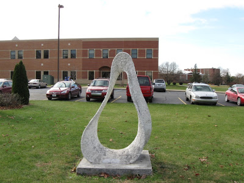The most recent addition to the statuary on campus is the striking presence of a nun. The notice in the Fall, 2008 issue of Contact, the college's alumni magazine, reported:
A statue memorializing St. Katharine Drexel was dedicated on June 8 at Saint Joseph’s College. The statue is located on the walkway between the Arts and Science Building and the tennis courts. It was commissioned by James ’61 and Esther McMahon. Sculptor Don Wilkins of North Fort Myers, Fla. created the statue with the intention to make it as life-like as possible. Fr. Len Kostka, C.PP.S. ’35 blesses the new statue of St. Katharine Drexel located in the Library Grove.
Sister Katherine Drexel established a school for Indian boys that lasted only a few years, but the building was key in the establishing the college on its present site. I like the statue, but I do not care for the littering of the area with the benches. Also, the new cement sidewalk replaces an older brick walkway that had a tremendous amount of character. Newer is not always better.
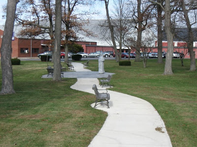
Street decorations
The city of Rensselaer has installed the Christmas steet decorations. I noticed yesterday that many other little towns had done the same. The wreath with three candles seems to be the most popular decoration not just in Rensselaer, but throughout the area.
I only saw one of these garlands spanning the street. Maybe they have not finished yet.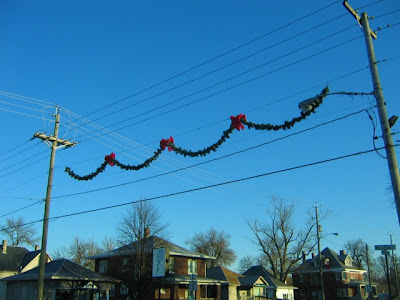I have fond memories of the Christmas decorations when I was a small child living in Minnesota. The little town that I lived in had only a few hundred people, so it only put six or eight decorations. They were made of real spruce or pine bows and spanned the streets. It is much easier today with the artificial greenery.
Still, the economist side of me wonders, "Is it really worth the expense to put these things up?"
I only saw one of these garlands spanning the street. Maybe they have not finished yet.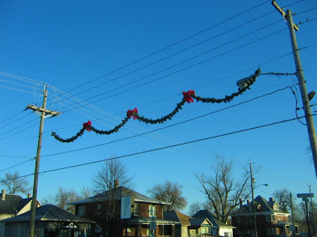I have fond memories of the Christmas decorations when I was a small child living in Minnesota. The little town that I lived in had only a few hundred people, so it only put six or eight decorations. They were made of real spruce or pine bows and spanned the streets. It is much easier today with the artificial greenery.
Still, the economist side of me wonders, "Is it really worth the expense to put these things up?"
Tuesday, November 25, 2008
Another grotto
I do not travel far from Rensselaer often, but on Tuesday I drove west through Beaverville, Illinois and decided to stop and look for what I was pretty sure was a grotto near the very impressive church. It was easy to find.
Beaverville was settled by French Catholics and was originally called St. Marye. Its name was changed when the residents found out there was another town by the same name in Illinois. The name Beaverville was chosen because of the abundant beaver in the area in the days before Beaver Lake, the largest lake in Indiana, was drained. 1895 is a key date in our story.
In 2007 it was refurbished. The statue that is presently there does not seem to fit the niche very well. It looks to me like a somewhat bigger statue was originally there.
There is a large grotto that currently is empty. There were not even any beer or pop cans on the day I visited.
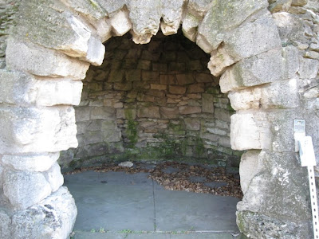If we walk north from the grotto past the playing field and the pear trees, we come to the church. There are several statues on the grounds, undoubtedly left from the days of the academy. A statue of Jesus stands in front of the church with is large rose window.
And here is the church. It is far, far larger than a church should be in a tiny town like Beaverville. Its size is a problem. It requires maintenance, and that is not cheap for a church this large. Here is some information on recent renovation.
Before I left I took the time to take pictures of two sculptures that were still on display.
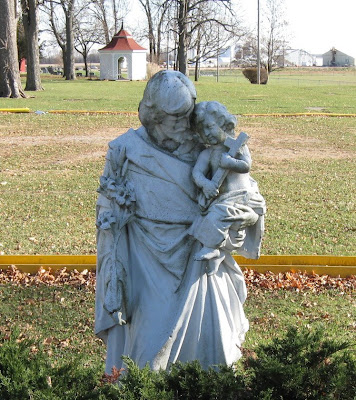Sometime I would like to stop and revisit the interior of this beautiful church. If I do, I will post the pictures on this blog.
Beaverville was settled by French Catholics and was originally called St. Marye. Its name was changed when the residents found out there was another town by the same name in Illinois. The name Beaverville was chosen because of the abundant beaver in the area in the days before Beaver Lake, the largest lake in Indiana, was drained. 1895 is a key date in our story.
1895 -- St. Mary's becomes the U.S. headquarters of Servants of the Holy Heart of Mary when four nuns, who had come from France, arrive to open Holy Family Academy, a novitiate and boarding school for boys and girls. Mother Marie Eustelle is first superintendent, through 1921. Four-story school completed; 60 students enrolled.Alas, the academy is no more, and the grotto is one of the few remnants of what must have been an impressive campus. Its history in a nutshell:
The Academy was opened by the sisters in September 1895 with 60 pupils. In less than 20 years, the enrollment increased to 300. Additional buildings were added in 1905. The Academy served as a coed elementary school and an all-girls high school. Do [sic] to a drop in enrollment, the elementary school was closed in 1965 and the high school in 1969. The building was razed in 1976-77You can find pictures of the buildings of the academy here.
1911 -- Grotto completed at south end of Holy Family grounds, as pledged by Sister Mary Anthony, who had been in ill health until she went to the Grotto at Lourdes in France.Here is a side view.
In 2007 it was refurbished. The statue that is presently there does not seem to fit the niche very well. It looks to me like a somewhat bigger statue was originally there.
There is a large grotto that currently is empty. There were not even any beer or pop cans on the day I visited.
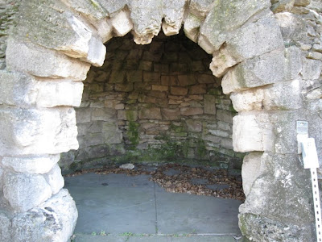If we walk north from the grotto past the playing field and the pear trees, we come to the church. There are several statues on the grounds, undoubtedly left from the days of the academy. A statue of Jesus stands in front of the church with is large rose window.
And here is the church. It is far, far larger than a church should be in a tiny town like Beaverville. Its size is a problem. It requires maintenance, and that is not cheap for a church this large. Here is some information on recent renovation.
Before I left I took the time to take pictures of two sculptures that were still on display.
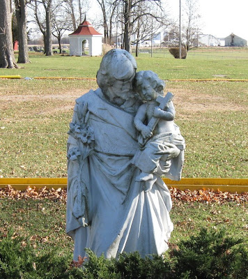Sometime I would like to stop and revisit the interior of this beautiful church. If I do, I will post the pictures on this blog.
Subscribe to:
Posts (Atom)